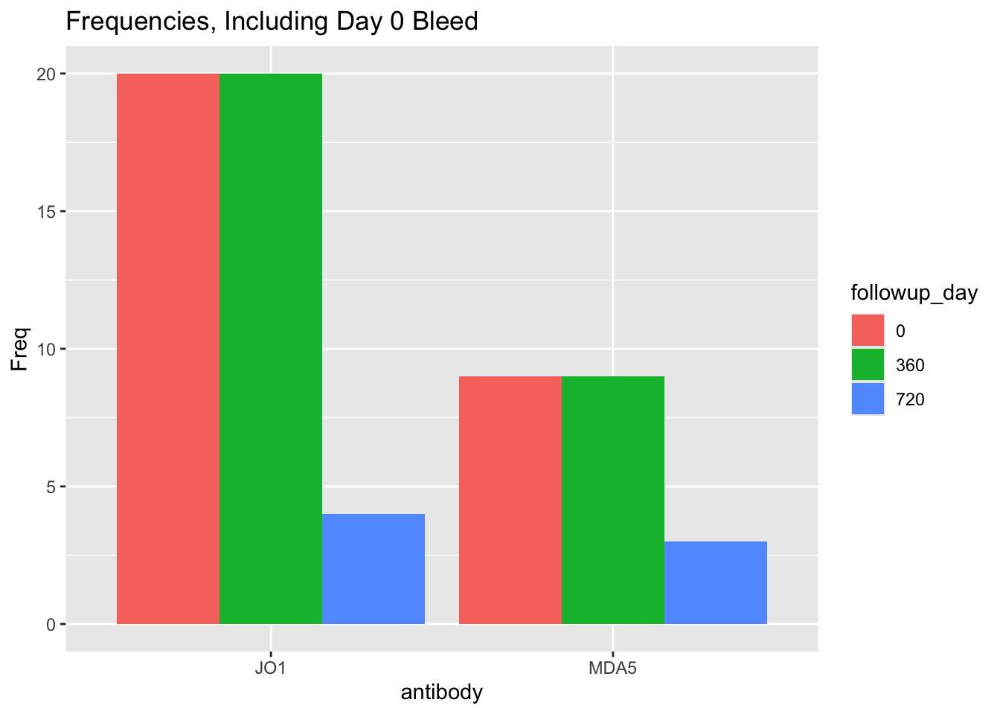
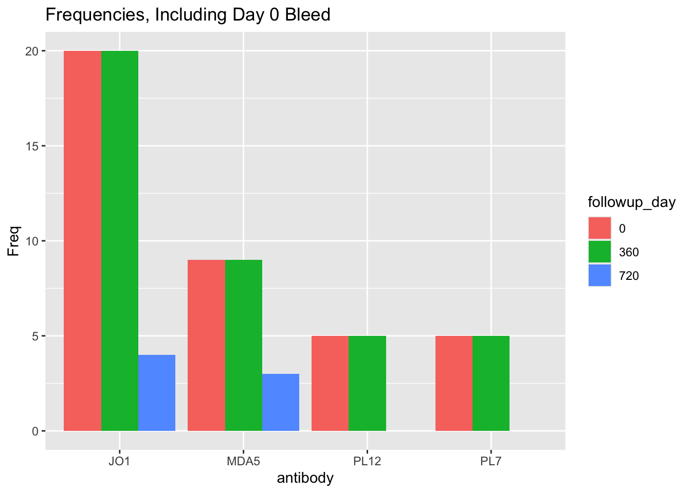
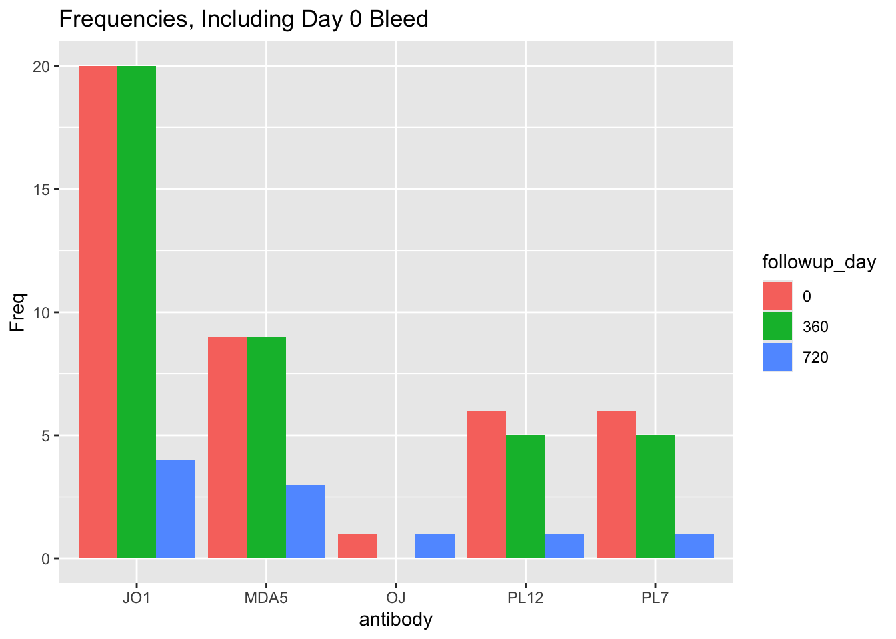

antibody | n | percent |
|---|---|---|
EJ | 14 | 2.7% |
JO1 | 231 | 44.3% |
MDA5 | 98 | 18.8% |
OJ | 21 | 4.0% |
PL12 | 66 | 12.7% |
PL7 | 91 | 17.5% |
Total | 521 | 100.0% |
stable_ild
Total Patients with Formal ASyS Antibody Diagnoses
There are substantial numbers of patients with unclear but suggestive diagnoses; for those, see Patients with Undefined Antibodies
Below are data from patients with formal antibody diagnoses. These data do not specify that patients have bleed dates or med starts – these are all patients in the database.
All ASyS Patients
All ASyS Patients with Bleed Data
These are results for ASyS patients with ANY follow-up bleeds.
There are no restraints to search parameters except they MUST have >=2 bleeds on record (these bleeds might be 10 days apart, or 10 years; as stated, no restraints have been added to these results).
N = 359 unique patients
N = 1314 total bleeds
n = 156 / 359 JO1 patients
n = 16 / 359 OJ patients
n = 64 / 359 MDA5 patients
n = 64 / 359 PL7 patients
n = 48 / 359 PL12 patients
n = 11 / 359 EJ patientsSelection, SOMA
The following is based on:
- startdate is earliest blood sample on record
- has at least 1 follow up bleed within specifications
- farthest follow-up is 24 months (2 years)
- interval between bleed dates is 12 months
- buffer time between bleed dates (i.e., X months post-follow up \(\pm\) buffer) is 3 months
Looking at the distribution of follow-up days, we see the following distribution:
N = 136 unique patients
N = 314 total bleeds
n = 30 / 136 PL7 patients
n = 55 / 136 JO1 patients
n = 9 / 136 OJ patients
n = 24 / 136 MDA5 patients
n = 14 / 136 PL12 patients
n = 4 / 136 EJ patientsAs an exploratory exercise, if we limit ourselves to patients:
- who have bleed dates at days 0, 720
- whose antibodies are NOT MDA5 or JO1
N = 13 unique patients
N = 26 total bleeds
n = 5 / 13 PL7 patients
n = 4 / 13 OJ patients
n = 4 / 13 PL12 patientsNext, if we then limit our gaze to patients meeting the following conditions:
- antibody is MDA5 or JO1
- antibody is PL12 with a titer >=50
- all patients chart-verified to have same clinical diagnosis as our bleed resultsWe get:
N = 29 unique patients
N = 58 total bleeds
n = 20 / 29 JO1 patients
n = 9 / 29 MDA5 patientsfollowup_day | JO1 | MDA5 | Total |
|---|---|---|---|
0 | 20 (69.0%) | 9 (31.0%) | 29 (100.0%) |
360 | 20 (69.0%) | 9 (31.0%) | 29 (100.0%) |
Total | 40 (69.0%) | 18 (31.0%) | 58 (100.0%) |
Adding Days 720
However, we would also like to include MDA5 and JO1 patients who had data from days 0, 360, AND 720.
So, adding those back in, we get the following new samples:
N = 7 unique patients
N = 7 total bleeds
n = 4 / 7 JO1 patients
n = 3 / 7 MDA5 patientsAnd thus, our total dataset would look like this:
N = 29 unique patients
N = 65 total bleeds
n = 20 / 29 JO1 patients
n = 9 / 29 MDA5 patients
Adding Extra PL12 / PL7 patients
To round out our result, we want to add in some PL12 and PL7 patients with appropriate day 0 and 360 results.
N = 39 unique patients
N = 85 total bleeds
n = 20 / 39 JO1 patients
n = 9 / 39 MDA5 patients
n = 5 / 39 PL7 patients
n = 5 / 39 PL12 patients
Adding Day 0, 720 results for OJ, PL7, PL12
If we add bleeds with:
- day 0 and 720 results only, who
- are anti-OJ, PL7, or PL12
We get:
N = 3 unique patients
N = 6 total bleeds
n = 1 / 3 OJ patients
n = 1 / 3 PL12 patients
n = 1 / 3 PL7 patientsThis makes our total cumulative result:
N = 42 unique patients
N = 91 total bleeds
n = 20 / 42 JO1 patients
n = 9 / 42 MDA5 patients
n = 6 / 42 PL7 patients
n = 6 / 42 PL12 patients
n = 1 / 42 OJ patients
Summary of Hand-Added Results
Thus, we have added the following items to “round out” our initial results, which had been based on MDA5 and JO1 patients.
N = 20 unique patients
N = 33 total bleeds
n = 4 / 20 JO1 patients
n = 3 / 20 MDA5 patients
n = 6 / 20 PL7 patients
n = 6 / 20 PL12 patients
n = 1 / 20 OJ patientsExporting the Result
For the total dataset, here are the results of bleeds we have on-hand at the NIH:
We already have n = 28 / 91 bleeds on hand.
Of that:
- n = 9 / 28 are from SOMA testing
- n = 19 / 28 are from other non-SOMA testing at the NIH
Thus, we need to request n = 63 / 91 samplesFor the hand-added results, here are the results of bleeds we have on-hand at the NIH:
We already have n = 10 / 33 bleeds on hand.
Of that:
- n = 3 / 10 are from SOMA testing
- n = 7 / 10 are from other non-SOMA testing at the NIH
Thus, we need to request n = 23 / 33 samplesantibody | 0 | 360 | 720 | Total |
|---|---|---|---|---|
JO1 | 8 (12.7%) | 20 (31.7%) | 4 (6.3%) | 32 (50.8%) |
MDA5 | 3 (4.8%) | 9 (14.3%) | 3 (4.8%) | 15 (23.8%) |
OJ | 1 (1.6%) | 0 (0.0%) | 1 (1.6%) | 2 (3.2%) |
PL12 | 1 (1.6%) | 5 (7.9%) | 1 (1.6%) | 7 (11.1%) |
PL7 | 1 (1.6%) | 5 (7.9%) | 1 (1.6%) | 7 (11.1%) |
Total | 14 (22.2%) | 39 (61.9%) | 10 (15.9%) | 63 (100.0%) |
Selection, Olink
Let’s explore our options for Olink.
The following is based on:
- No patients in the longitudinal SOMA or med-start datasets
- we are ALLOWING old SOMA patients (not longitudinal SOMA patients) who were in SOMA kits 1, 2, or 3; these old SOMA patients in kits 1-3 are excluded if they were subsequently used in the longitudinal SOMA list or the med-start list
- accordingly, we would be excluding patients started on a medication who then stabilized; however these means we only lose n = 19 unique patients
- startdate is earliest blood sample on record
- has at least 1 follow up bleed within specifications
- farthest follow-up is 120 months (10 years)
- interval between bleed dates is 12 months
- buffer time between bleed dates (i.e., X months post-follow up \(\pm\) buffer) is 3 months
N = 157 unique patients
N = 418 total bleeds
n = 34 / 157 PL7 patients
n = 63 / 157 JO1 patients
n = 23 / 157 MDA5 patients
n = 20 / 157 PL12 patients
n = 6 / 157 EJ patients
n = 11 / 157 OJ patientsThese numbers represent unique patients
with ANY kind of follow-up bleed dates.
That may be a day 0 plus one of:
12m 24m 36m 48m 60m 72m 84m 96m 108m 120m
Or day 0 plus two or more follow-ups matching:
12m 24m 36m 48m 60m 72m 84m 96m 108m 120m
Accordingly, the numbers above don't have uniform bleed intervals.
For that, see below.
==================================
If these follow-ups are required:
0m 12m
==================================
There are:
N = 16 unique patients
N = 32 total bleeds
n = 3 / 16 PL12 patients
n = 8 / 16 PL7 patients
n = 1 / 16 OJ patients
n = 1 / 16 EJ patients
n = 1 / 16 MDA5 patients
n = 2 / 16 JO1 patients
==================================
If these follow-ups are required:
0m 24m
==================================
There are:
N = 32 unique patients
N = 64 total bleeds
n = 4 / 32 PL7 patients
n = 17 / 32 JO1 patients
n = 5 / 32 MDA5 patients
n = 3 / 32 OJ patients
n = 3 / 32 PL12 patients
==================================
If these follow-ups are required:
0m 36m
==================================
There are:
N = 21 unique patients
N = 42 total bleeds
n = 10 / 21 JO1 patients
n = 6 / 21 PL12 patients
n = 3 / 21 MDA5 patients
n = 2 / 21 PL7 patients
==================================
If these follow-ups are required:
0m 48m
==================================
There are:
N = 21 unique patients
N = 42 total bleeds
n = 13 / 21 JO1 patients
n = 1 / 21 OJ patients
n = 4 / 21 PL12 patients
n = 2 / 21 MDA5 patients
n = 1 / 21 PL7 patients
==================================
If these follow-ups are required:
0m 60m
==================================
There are:
N = 18 unique patients
N = 36 total bleeds
n = 11 / 18 JO1 patients
n = 3 / 18 MDA5 patients
n = 2 / 18 OJ patients
n = 1 / 18 PL7 patients
n = 1 / 18 PL12 patients
==================================
If these follow-ups are required:
0m 72m
==================================
There are:
N = 14 unique patients
N = 28 total bleeds
n = 8 / 14 JO1 patients
n = 3 / 14 PL7 patients
n = 2 / 14 PL12 patients
n = 1 / 14 MDA5 patients
==================================
If these follow-ups are required:
0m 84m
==================================
There are:
N = 13 unique patients
N = 26 total bleeds
n = 2 / 13 PL7 patients
n = 1 / 13 EJ patients
n = 3 / 13 MDA5 patients
n = 5 / 13 JO1 patients
n = 2 / 13 PL12 patients
==================================
If these follow-ups are required:
0m 96m
==================================
There are:
N = 13 unique patients
N = 26 total bleeds
n = 3 / 13 PL7 patients
n = 2 / 13 MDA5 patients
n = 4 / 13 PL12 patients
n = 2 / 13 OJ patients
n = 1 / 13 JO1 patients
n = 1 / 13 EJ patients
==================================
If these follow-ups are required:
0m 108m
==================================
There are:
N = 13 unique patients
N = 26 total bleeds
n = 5 / 13 JO1 patients
n = 3 / 13 MDA5 patients
n = 4 / 13 PL12 patients
n = 1 / 13 PL7 patients
==================================
If these follow-ups are required:
0m 120m
==================================
There are:
N = 9 unique patients
N = 18 total bleeds
n = 1 / 9 EJ patients
n = 5 / 9 JO1 patients
n = 2 / 9 PL12 patients
n = 1 / 9 PL7 patients
==================================
If these follow-ups are required:
0m 12m 24m
==================================
There are:
N = 3 unique patients
N = 9 total bleeds
n = 1 / 3 PL7 patients
n = 1 / 3 PL12 patients
n = 1 / 3 JO1 patients
==================================
If these follow-ups are required:
0m 12m 24m 36m
==================================
There are:
N = 1 unique patients
N = 4 total bleeds
n = 1 / 1 PL12 patients
==================================
If these follow-ups are required:
0m 12m 24m 36m 48m
==================================
There are:
N = 0 unique patients
N = 0 total bleeds
n = 0 / 0 NA patients
==================================
If these follow-ups are required:
0m 12m 24m 36m 48m 60m
==================================
There are:
N = 0 unique patients
N = 0 total bleeds
n = 0 / 0 NA patients
==================================
If these follow-ups are required:
0m 12m 24m 36m 48m 60m 72m
==================================
There are:
N = 0 unique patients
N = 0 total bleeds
n = 0 / 0 NA patients
==================================
If these follow-ups are required:
0m 12m 24m 36m 48m 60m 72m 84m
==================================
There are:
N = 0 unique patients
N = 0 total bleeds
n = 0 / 0 NA patients
==================================
If these follow-ups are required:
0m 12m 24m 36m 48m 60m 72m 84m 96m
==================================
There are:
N = 0 unique patients
N = 0 total bleeds
n = 0 / 0 NA patients
==================================
If these follow-ups are required:
0m 12m 24m 36m 48m 60m 72m 84m 96m 108m
==================================
There are:
N = 0 unique patients
N = 0 total bleeds
n = 0 / 0 NA patients
==================================
If these follow-ups are required:
0m 12m 24m 36m 48m 60m 72m 84m 96m 108m 120m
==================================
There are:
N = 0 unique patients
N = 0 total bleeds
n = 0 / 0 NA patients